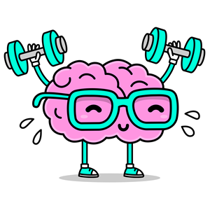

La salud mental
La salud mental es un estado de bienestar que permite a las personas reconocer sus capacidades, afrontar las dificultades de la vida, trabajar de manera productiva y contribuir a su comunidad. No se trata únicamente de la ausencia de enfermedades mentales, sino también de mantener un equilibrio emocional, psicológico y social. En la adolescencia, la salud mental es especialmente importante debido a los cambios físicos, emocionales y sociales que ocurren durante esta etapa del desarrollo.
Importancia de la salud mental en la adolecencia
La adolescencia es una etapa de transición entre la niñez y la adultez en la que los jóvenes construyen su identidad y desarrollan su personalidad. Durante este período, una buena salud mental favorece la autoestima, la confianza en sí mismos y la capacidad para relacionarse con otras personas. Además, ayuda a enfrentar los desafíos cotidianos, mejorar el rendimiento académico y tomar decisiones responsables que contribuyan a un desarrollo saludable.
Problemas de salud mental mas frecuentes en adolecentes
Entre los problemas más comunes se encuentran la ansiedad, la depresión, el estrés y los trastornos alimentarios. La ansiedad provoca preocupación excesiva y miedo constante ante diversas situaciones. La depresión se caracteriza por sentimientos persistentes de tristeza, pérdida de interés en actividades habituales y falta de energía. El estrés suele estar relacionado con las exigencias escolares, familiares y sociales. Por otro lado, los trastornos alimentarios afectan la relación de los adolescentes con la comida y la imagen corporal, pudiendo poner en riesgo su salud física y emocional.